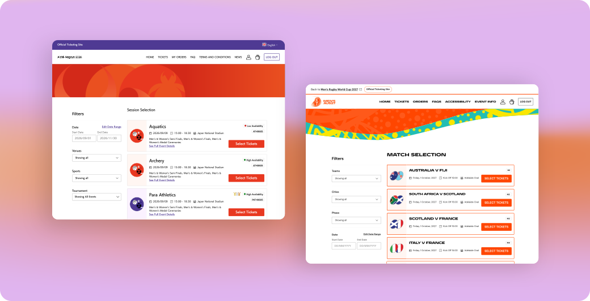
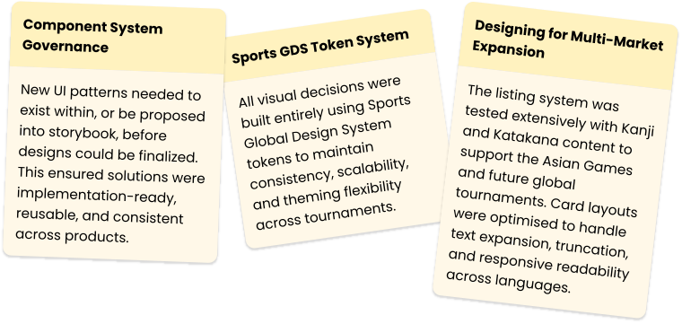
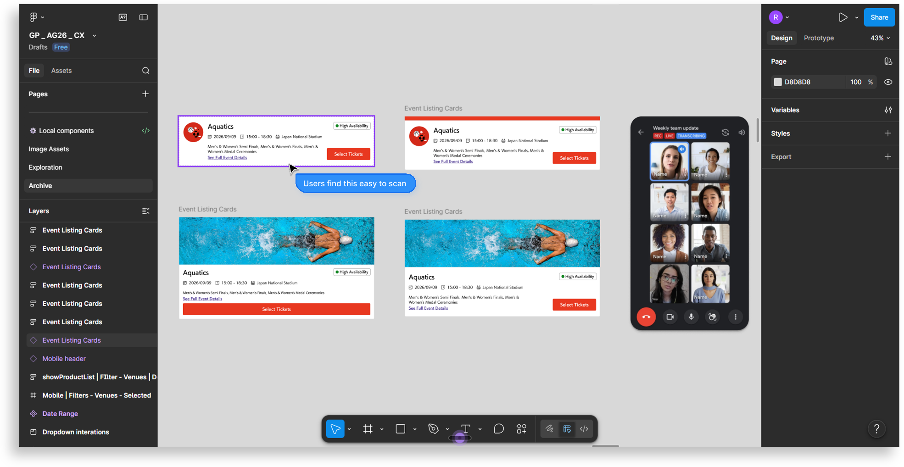
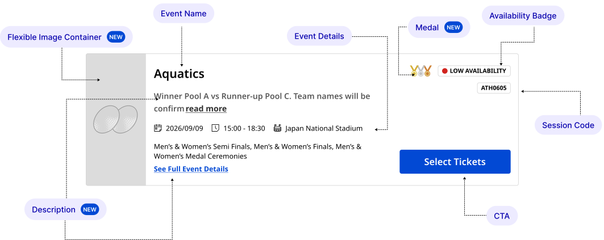
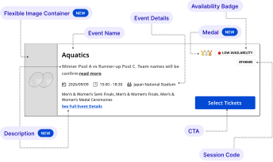
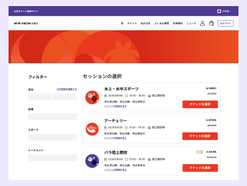
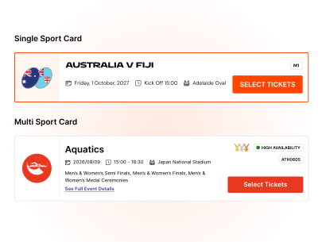
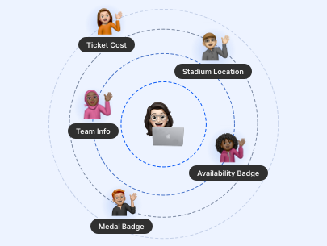
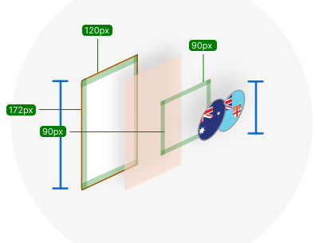

Designed a configuration-driven component system to scale ticketing across every tournament format
Each new tournament format added design and engineering overhead — components were rebuilt, patterns diverged, and delivery slowed as the platform scaled. This project established a configuration-driven component architecture that could adapt across tournament types and venues, letting product teams configure new experiences rather than rebuild them from scratch.

The Issue
The platform was responsible for ticketing across all tournaments — yet each experience was built independently, with no shared component system. This created inconsistent user experiences, duplicated design and engineering effort, and fragmented behavior across products. Slower rollout timelines and compounding maintenance overhead meant the team couldn't scale new tournaments efficiently, directly threatening their ability to launch on time and at quality.
Short on time? Try out the scalable component
Toggle the options below to explore how a single card adapts to different tournament contexts for the Event Listing page.
Scroll to Explore. This component was designed for Desktop view.
Problem Framing
Why the Existing Model Couldn't Scale
The component library had grown organically without governance. Every new format left its mark as a new variant, forked component, or one-off implementation. The root causes:
-
01Isolated flowsEach tournament ships its own end-to-end experience.01Reusable adoptionTeams compose from shared components instead.
-
02Repeated effortEngineering rebuilds the same primitives every cycle.02Less QA & impl.One tested surface covers every tournament.
-
03No config supportVariants require code changes, not configuration.03Faster rolloutsNew tournaments launch from config in days.
-
04Diverging UXPatterns drift between products and platforms.04Consistent UXPlayers see one coherent system everywhere.
-
05Compounding costEvery new tournament adds maintenance surface.05Fewer redesignsImprovements propagate centrally, not per-feature.
System Constraints
What the design had to accommodate

Research
Research Insights Applied to the Listing Experience
Insights from Post-Purchase Fan Interviews and Discovery Research directly informed the information hierarchy, card behavior, and filtering experience.
What these insights told us together
Across post-purchase and discovery research, fans consistently used three signals to decide whether an event was worth clicking through: availability, venue, and content hierarchy. The pattern was directional — fans wanted enough information to commit on the listing itself, with the click-through reserved for confirmation rather than discovery.
This shaped three architectural decisions that show up across the rest of the case:
Availability surfaced as a first-class element on the card ("High Availability / Low Availability / Unavailable") rather than discovered after click-through.
Venue elevated in the card hierarchy above secondary metadata (session times, ticket categories), supporting fans who decide based on location first.
Medal and prioritisation cues introduced to help fans surface high-interest sessions across 26+ sports without forcing them to scan everything.
Design Principles
Core Experience Principles
Every design decision — from card hierarchy to accessibility behavior — was evaluated against three foundational principles.
Sport, venue, date, and ticket availability were designed to be immediately scannable without requiring cognitive effort or secondary interaction.
The same reusable card and filter system needed to support everything from high-volume Athletics schedules to premium single-session ceremonies without redesigning components per sport.
Layouts, hierarchy, and interactions were designed to support screen readers, responsive scaling, keyboard navigation, and clear information comprehension across accessibility needs.
Strategy
Defining the experience strategy
User Type 1
- Arrives with a specific sport and session in mind — filtering is their primary action
- Needs date, venue, and availability confirmed fast before committing
- Frustrated by unnecessary friction — the moment they can't see availability or venue on a listing card, they assume the event isn't worth investigating.
User Type 2
- Doesn't have a sport preference — wants to know what's available and affordable
- Needs enough context from the card to decide without clicking through
- Likely comparing multiple events simultaneously — needs the card to carry enough context (medal status, availability, venue) to support side-by-side decisions without click-through.

Architecture
System Architecture Strategy
Each section could be enabled, removed, or reordered through configuration instead of code changes.
Focus behaviour, touch targets, and interaction states were built into the component contract.
Labels, metadata, and spacing adapted across languages without breaking the component.
Shared behaviours replaced one-off implementations across tournaments.
Visual styling could be updated per tournament without changing structure or behaviour.


Explorations
Directions considered and what they traded off
Before settling on a single configuration-driven card architecture, three approaches were explored. Each was tested against the three core principles — clarity at a glance, one system across all sports, accessibility by default.

How the direction evolved
The tensions that shaped each decision

What happened
Kanji needs more horizontal space than Latin. Card breakpoints had to widen for Asian Games 2026, pushing English content into a sparser grid with more horizontal scanning per row.
What was at stake
Optimizing for English density would clip or wrap Kanji — a legibility problem for the Japan-hosted tournament. Optimizing for Kanji cost English scan efficiency.
How I decided
Language legibility was non-negotiable — a design that failed one host tournament couldn't ship for either. I set breakpoints against Kanji requirements and adjusted the listing grid to accommodate wider cards. Small cost to English scan efficiency in exchange for correct legibility across both languages — the design system's ability to serve multi-market tournaments outweighed maximum density in either single-language context.

What happened
Product wanted two separate card components — one for multi-sport, one for single-sport. The intent was to give each team freedom to tune their design.
What was at stake
Two components meant every update had to happen twice. Storybook and repo consistency became fragile. Improvements to one card would need manual propagation to the other, with drift risk over time.
How I decided
The actual difference between multi-sport and single-sport cards was surface configuration, not underlying structure — same base component, different rendered output. Tournament-specific behavior could be controlled through Backoffice configuration (TM1 Legacy), letting each client tune their cards without engineering rework. One component, one Storybook entry, one place to fix bugs — with the same visual differentiation the two-component approach was trying to achieve.

What happened
Different users wanted different information prioritized on the card — price, image, venue, medal ceremonies. Everyone had a valid case for their signal to lead.
What was at stake
Leading with the wrong information meant unnecessary click-throughs or skipped events. Across a full listing page, this affects ticket purchase conversion.
How I decided
Anchored the decision to research signal rather than stakeholder preference. Previous interviews and A/B testing pointed to three universal decision drivers: location, event type, ticket availability. User validation confirmed location, team, and ticket availability as prime parameters. Price came second. Medal ceremonies and image treatments became configurable — surfaced when tournament context made them relevant, de-emphasized when they weren't. Information hierarchy resolved by evidence; elements that couldn't be evidenced universally became configuration.

What happened
My initial preference was logo-only cards. SVG logos were lightweight, worked consistently across desktop and mobile, and used less data — meaningful for slower connections and limited data plans.
What was at stake
Logo-only worked for logo-centric brands but not for clients wanting to lead with tournament imagery, host city visuals, or event photography.
How I decided
Designed the visual anchor as two configurable layers — base layer for image and color, logo layer on top that could be toggled per client brand direction. Clients got control over image configuration rather than forking the component. I also created guidelines on how to use the image section without compromising legibility or accessibility. The reversal wasn't from logo-only to image-only — it was from single-mode to configuration.
Experience Design
Key Experience Flows
Check out the information presented across the cards in the Listing Experience, Checkout Experience and Event Detail Experience.
Solution
Final Direction
The final direction focused on building reusable configuration-driven templates and scalable component structures that could adapt across tournaments while maintaining consistent user experiences and implementation efficiency.

Mode
- XT - Base Theme
- MRWC27
- AG26
Same component. Three tournaments. Configuration over code.
Toggle between the base theme, Rugby World Cup 2027, and Asian Games 2026 to see how configuration replaces duplication.
Impact
What happened after we shipped
Reduction in design-to-engineering time for new tournament format launches
Tournament formats fully supported by the shared architecture without new component builds
Product teams now building on the shared component system — previously each maintained their own fork
All three product teams migrated to the shared architecture within 8 weeks of launch — no mandate, no migration deadline
⚑ Metrics shown are based on post-launch reporting from the Product Management team and are included as shared business outcomes rather than independently measured design metrics.
Shifting the delivery model
This project shifted tournament delivery from isolated, tournament-specific implementations to a configuration-driven platform. Instead of rebuilding experiences for every new event, teams could configure reusable foundations that scaled across tournaments with minimal engineering effort.
Changing how teams collaborate
Beyond the component itself, it also changed how design and engineering collaborated. Rather than redefining behavior for every tournament, both teams worked from a shared configuration model — agreeing on theming, interaction patterns, and component behavior once, then reusing them across future events.
A foundation for the future
The architecture became the foundation for future tournament onboarding, improving consistency, reducing implementation effort, and supporting the platform's long-term evolution.